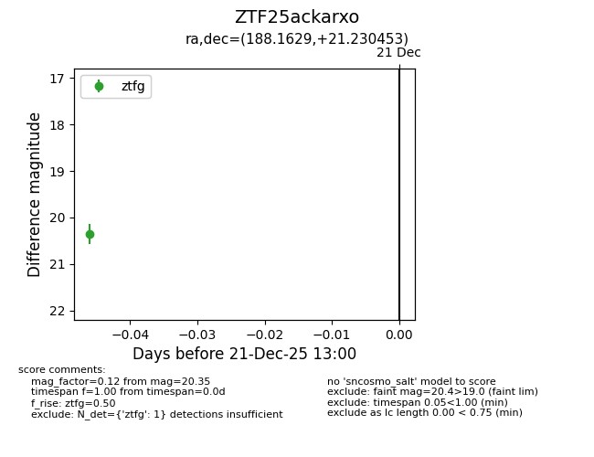
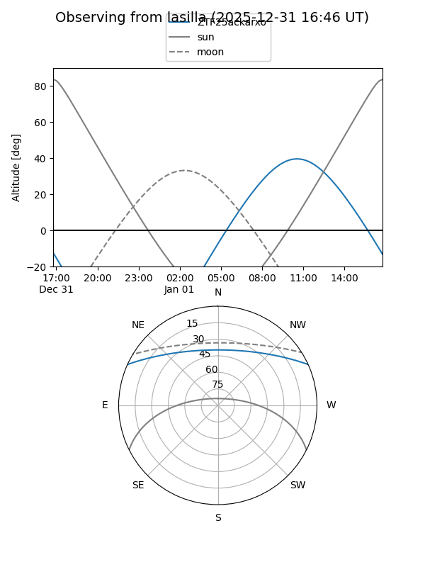
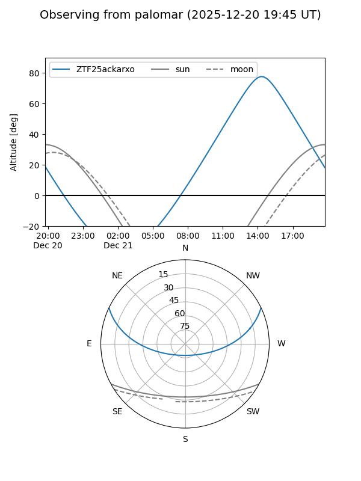

ZTF25ackarxo
Target ZTF25ackarxo at 2025-12-31 17:00
Aliases and brokers:
FINK:
Lasair:
ALeRCE:
alt names
ZTF25ackarxo (ztf,fink_ztf)
Coordinates:
equatorial (ra, dec) = 188.1629,+21.23045
equatorial (HMS+DMS) = 12:32:39.09,+21:13:49.63
galactic (l, b) = (265.9438,+82.71207)
Flags:
Photometry:
last ztfg=20.35
1 ztfg detections
Lightcurve

Visibility


Additional plots